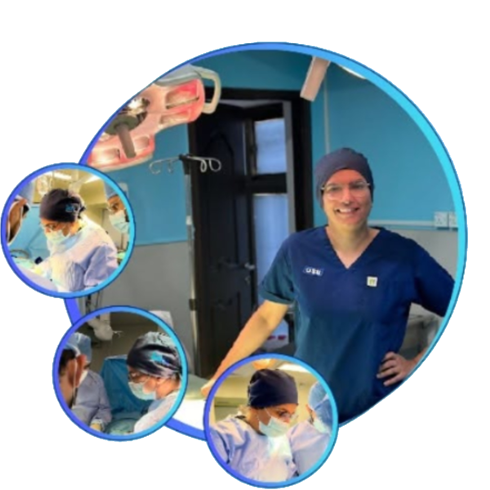

Dr. Ayesha Saeed performing pediatric orthopedic reconstructive surgery.
Dr. Ayesha Saeed: Dedicated to Child Bone & Joint Health
Dr. Ayesha Saeed is an internationally trained Pediatric Orthopedic Surgeon specializing in diagnosing and treating complex orthopedic conditions in infants, children, and adolescents. She completed her specialized training at The Hospital for Sick Children (SickKids) in Toronto, Canada, where she acquired expertise in advanced clinical methods and surgical techniques for children's skeletal deformities.
Prior to her international training, she achieved the highest rank in her specialization exams, earning the prestigious FCPS Gold Medal in Orthopedics. This unique combination of academic excellence and top-tier clinical training enables her to deliver international-standard care to families in Pakistan.
Dr. Ayesha believes in a compassionate, child-focused approach. She understands that a child is not just a small adult; their growing bones and flexible joints demand specialized techniques, gentle communication, and evidence-based treatments. Parents can confidently trust Dr. Ayesha with their child's skeletal growth, alignment, and active recovery.
Skeletal Growth Milestones
Every child's journey from infancy to youth is defined by skeletal growth. Keep track of crucial bone and joint health checkmarks at every stage.
Diaper Check & Hips
During diapers, monitor for uneven skin folds, hip clicks, or stiffness during leg spread, which can indicate Developmental Dysplasia of the Hip (DDH).
First Steps & Alignment
As your baby starts crawling and taking their first steps, watch for asymmetrical footprints, persistent inward turning (pigeon toes), or stiff tip-toe walking.
Bow Legs & Knock Knees
Mild bowing is normal up to 2 years, and knock knees normal up to 5. Check if alignment is severely bowed on one side or causes a limp.
Postures & Growing Pains
During rapid growth spurts, screen for uneven shoulder heights or a curved rib cage (scoliosis) and persistent limb/heel pain after play.
Why Choose Dr. Ayesha Saeed
Exceptional pediatric orthopedic care based on global standards, advanced clinical technology, and child-safe therapy.
Internationally Trained
Trained in pediatric reconstructive orthopedics at SickKids, Toronto, Canada.
Gold Medalist
FCPS Gold Medalist, recognized for outstanding surgical capabilities.
Evidence-Based Care
Aligning treatments with the latest international pediatric protocols.
Child-Friendly Care
Clinics structured to put children at ease and remove hospital anxiety.
Growth Plate Safety
Specialized care protecting delicate growing bones and joints.
Guided Growth Tech
Using minimally invasive procedures to guide natural bone alignment.
Frequently Asked Questions
Clear, direct clinical answers to common questions parents ask about children's bone, joint, and orthopedic care.
Schedule a Consultation for Your Child
Please fill out the booking form to request an in-person consultation with Dr. Ayesha Saeed. Our clinic booking representative will contact you shortly to confirm your date and time slot.
Fill Out Child Details
Provide details regarding the child's age, medical concern, and preferred clinic location.
Clinic Verification
Our pediatric booking coordinator will call or WhatsApp you within 2-4 hours to confirm.
Consultation Visit
Meet Dr. Ayesha Saeed for a child-friendly skeletal examination and custom recovery plan.
"Let's help your child move, grow, and play with confidence."
Hospital Locations & Consultation Timings
Dr. Ayesha Saeed provides expert consulting and surgical services at premium healthcare institutions in Karachi and Lahore.